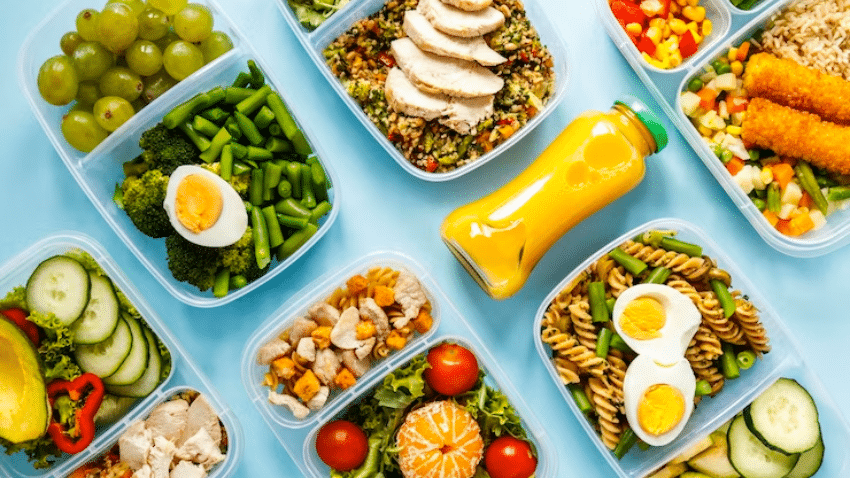

Consejos de Nutrición Personalizada
Aprende a adaptar tus recetas a tus necesidades específicas

Selección de Ingredientes
- Cómo elegir proteínas magras
- Alternativas saludables a ingredientes comunes
- Guía de carbohidratos complejos
Técnicas de Cocina
- Métodos de cocción saludables
- Reducción de calorías sin perder sabor
- Cómo realzar sabores naturalmente

Planificación
- Batch cooking para principiantes
- Cómo adaptar recetas a tus necesidades
- Guía de porciones saludables
Consejo Destacado
Cómo Personalizar Tus Recetas
Aprende a modificar cualquier receta para adaptarla a tus requerimientos nutricionales específicos, ya sea para aumentar proteínas, reducir carbohidratos o adecuarla a alergias alimentarias.
1
Identifica tus objetivos nutricionales
2
Reconoce ingredientes intercambiables
3
Ajusta cantidades y métodos de cocción